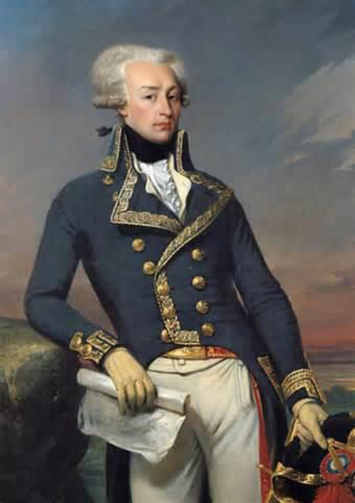

|
Aboriginals, French Compagnies franches de la Marine, and Canadians Against the British and Americans in the Battle of the Monongahela, 1755 
Montcalm After the Battle of Carillon, 1758 French and Canadian Troops Advancing in the Battle of the Plains of Abraham, 1759 Colonel and Naval Captain Louis-Antoine de Bougainville The French and British Fleets in the Battle of the Chesapeake |
.... |
Montcalm and His Aboriginal Allies at Fort Carillon, 1758 French Troops Defending the Fortress of Louisbourg, 1758 French Troops Burning Their Colours Before Surrendering at Montréal, 1760  French Volunteer Major General the Marquis de La Fayette Rochambeau and Washington at the Siege of Yorktown |
Website designed, coded, and created by Julian Nicolai